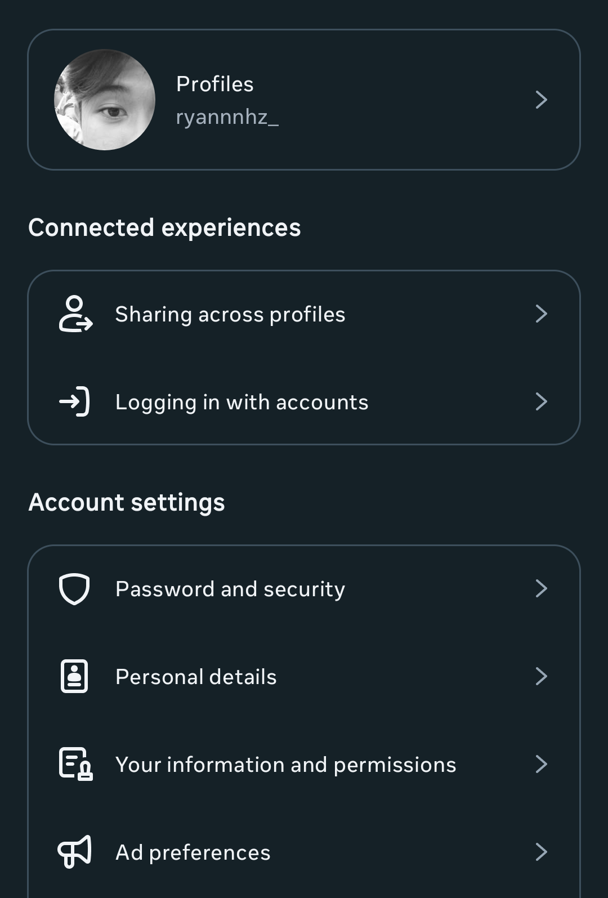
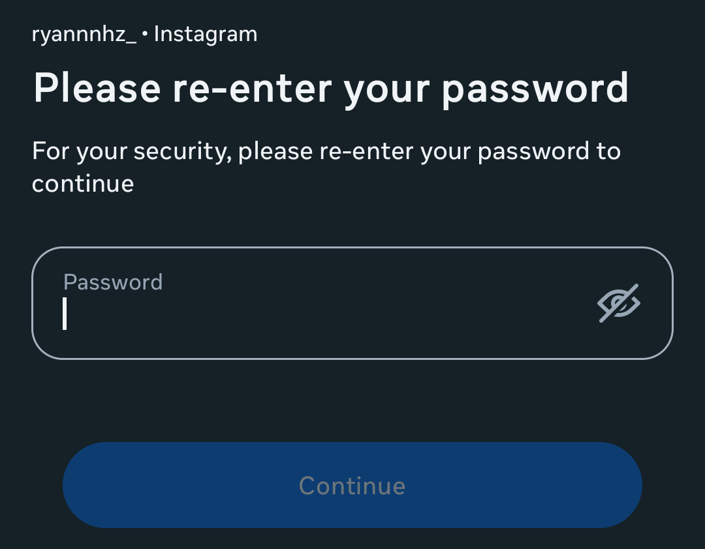

klik garis tiga di pojok kanan atas untuk masuk ke menu settings and privacy
 2. masuk ke your activity
2. masuk ke your activity
klik menu your activity setelah masuk ke menu your acitivity scroll ke bawah sampai ada menu download your information klik menu tersebut
3. information and permissionklik menu your information and permission setelah masuk ke menu your information and permission download your information klik menu tersebut
 4. download your informationklik download or transfer information
5. pilih menu some of your informationklik some of your information
6. pilih data apa saja yang akan di installscroll ke bawah dan centang followers and following lalu klik next
7. download informationklik download to device
8. pilih format informasiubah date range ke all time dan ubah format ke json setelah itu klik save
9. tunggu permitaan di acctunggu permintaan informasi dari in progress sampai ke availble downloads setelah itu klik download note : menunggu acc ini bisa lama bisa cepet bisa sampe satu hari tapi ga akan lebih dari satu hari
10. download informasisetelah kamu klik download kamu akan di minta untuk menuliskan password setelah itu data kalian akan langsung terdownload
 11.cek informasimasuk ke moots tracker lalu masukan file zip informasi yang sudah kamu download tadi lalu klik tomobol cek dan foyla sudah berhasil dan kamu bisa ngecek siapa orang orang sok famous itu :)